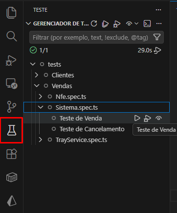

Como Instalar GOFLASH
Guia de instalação passo a passo para o ambiente local.
Pré-requisitos
Antes de iniciar, verifique se as dependências abaixo estão instaladas na sua máquina:
| Ferramenta | Versão usada | Verificar |
|---|---|---|
Node.js
|
v22.20.0 | node -v |
Git
|
~ | git -v |
npm |
10.9.3 | npm -v |
Playwright |
1.58.2 | package.json |
Playwright Test for VSCode |
~ | Extensão VsCode |
Goflash POS
|
v1.74.09 | DLL |
Trayservice
|
v1.74.09 | DLL |
Passo a passo
Clone ou baixe o repositório
Faça o clone ou baixe o repositório onde possui os testes para utilizar no Goflash.
# 1. Clone o repositório git clone https://github.com/MeirelesJv/B2U-Testes.git
Instale as dependências
Execute o gerenciador de pacotes na raiz do projeto.
# 2. Instale as dependências npm install
Instale o Playwright
Execute no terminal o npx para instalar o Playwright.
# 3. Instale o Playwright npx playwright install
Configure as variáveis de ambiente
Copie o example.config.ts para
config.ts e preencha os valores.
# 4. Copie o arquivo de ambiente cp example.config.ts config.ts
Não se esqueça de preencher todo o config.ts além
de colocar o ambiente todo em homolog.
Possíveis erros e suas soluções
Failed to connect
Caso inicie algum teste que utilize alguma query no banco, é necessário ter o TCP/IP do SQL habilitado.
Para resolver, habilite pelo Sql Server Configuration Manager → Configuração de Rede do SQL Server.
UnauthorizedAccess terminal VsCode
Há chances de ao fazer algum comando no terminal do VsCode, ele dar um erro de acesso não autorizado.
Para resolver, inicie o Powershell como adm e rode:
Set-ExecutionPolicy –ExecutionPolicy RemoteSigned
Como Usar GOFLASH
Fluxos básicos e avançados para testar o Goflash com o Playwright.
Iniciando os testes
Após já ter o ambiente do Goflash instalado e os arquivos do
Playwright.
É possível iniciar os testes de duas formas: com o
Painel UI ou pela Extensão do VsCode.
Os testes estão separados por módulos do Goflash POS — cada arquivo é de um módulo específico e dentro dele há mais de 1 teste.
Pela Extensão é possível testar teste por teste
separadamente.
Já pelo Painel UI é possível testar o arquivo todo,
sendo um módulo inteiro.
# Iniciar os testes com Painel UI npx playwright test --ui
Testes Unitários
Para iniciarmos os testes separadamente, é necessária a extensão
instalada no VSCode Playwright Test for VSCode.
Após a instalação, terá um novo módulo na navbar do VSCode. Nela temos os módulos e em cada um é possível iniciar cada teste.

Módulo do Playwright no VSCodeTestes Painel UI
Para iniciar os testes pelo Painel UI, basta rodar o
comando no terminal.
# Inicia o teste com o Painel. npx playwright test --ui
Demais comandos Playwright
# Roda os testes end-to-end. npx playwright test # Inicia o teste com o Painel. npx playwright test --ui # Os testes são executados apenas no Chrome. npx playwright test --project=chromium # Roda os testes de um arquivo específico. npx playwright test example # Executa os testes em modo de depuração. npx playwright test --debug
Variáveis de Ambiente GOFLASH
Todas as variáveis necessárias para configurar o ambiente.
Copie o arquivo example.config.ts da raiz do
projeto para config.ts e preencha cada valor
conforme descrito abaixo.
Variáveis
| Variável | Descrição | Exemplo |
|---|---|---|
porta |
Número da porta em que está o Goflash | 80 / 90 |
usuario |
Usuário do Goflash para login. Preferência de gerente | Junior |
senha |
Senha do usuário para login | 12345678 |
codProdutoBarra |
Código de barra de produto para testes específicos | 7890103788423 |
cliente |
Nome de algum cliente cadastrado | CLIENTE BALCAO - TORITAMA2 |
user |
Usuário para acessar o banco de dados | sa |
password |
Senha do usuário para o banco de dados | 123 |
database |
Nome do banco de dados | loja_Ibirapuera |
server |
Conexão para acessar o SQL | localhost |
Testes — Goflash PLAYWRIGHT
Visão geral da suíte de testes automatizados E2E do Goflash.
Todos os testes rodam nos browsers chromium,
firefox e webkit.
Há chances de correções ou atualizações serem implementadas mas não atualizadas nos códigos do manual. Mais recomendado o uso dos códigos atualizados pelo repositório.
Testes disponíveis
Teste de Login
Valida o fluxo de autenticação.
Venda Simples
Realiza o processo de venda com 1 produto.
Troca
Realiza o processo de troca.
Cancelamento
Realiza o cancelamento no módulo de venda.
Teste: Login GOFLASH
Testa o fluxo de autenticação com credenciais válidas.
O que este teste cobre
Login com credenciais válidas
Verifica redirecionamento para o dashboard após login correto.
Código do teste
async function globalSetup() { console.log("Iniciando login..."); const browser = await chromium.launch({ headless: false, slowMo: 500 }); const context = await browser.newContext(); const page = await context.newPage(); await page.goto("http://localhost:" + config.porta); await page.waitForLoadState("networkidle"); await page.getByPlaceholder("Usuário").fill(config.usuario); await page.getByPlaceholder("senha").fill(config.senha); await page.getByRole("button", { name: "FAZER LOGIN" }).click(); await page.waitForLoadState("networkidle"); await context.storageState({ path: "auth.json" }); const authJson = JSON.parse(fs.readFileSync("auth.json", "utf-8")); authJson.cookies = authJson.cookies.map((cookie: any) => ({ ...cookie, domain: "localhost", })); fs.writeFileSync("auth.json", JSON.stringify(authJson, null, 2)); console.log("✅ Login concluído!"); await browser.close(); }
Executar este teste
npx playwright test global.setup.ts --reporter=list
Esse teste sempre é rodado ao iniciar os demais testes. Então não é necessário rodá-lo separadamente!
Teste: Venda Simples GOFLASH
Cobre o caminho do início ao fim de uma venda simples de apenas 1 produto.
Fluxo do teste
Login e acesso ao painel
Autenticação e verificação de elementos do dashboard.
Nova Venda
Verifica se há venda aberta. Se tiver, cancela e inicia outra. Se não, abre diretamente.
Preenchimento de campos
Seleciona vendedor e verifica se o cliente já está preenchido. Se não estiver, preenche com o cliente da variável.
Adição de produto
Adiciona o produto da variável na venda.
Finalização da Venda
Realiza a finalização, selecionando dinheiro como forma de pagamento.
Validação
Sistema verifica se aparece a mensagem de venda gerada com êxito.
Código do teste
test("Teste de Venda", async ({ page }) => { test.setTimeout(0); //Acessa o site await page.goto("http://localhost:" + config.porta); await page.waitForLoadState("networkidle"); //Caso tenha o pop-up de tabela vencida const popupTributo = page.getByTestId("closeModalTributoAproximado"); if (await popupTributo.isVisible()) { await popupTributo.click(); await page.waitForLoadState("networkidle"); } //Verifica se tem uma venda já aberta const temVendaAberta = await page .locator("#main-menu-venda-add p") .getByText("Retomar Venda") .nth(1) .isVisible(); if (temVendaAberta) { await page.locator('a[href="#/venda/add/"]').first().click(); await page.waitForLoadState("networkidle"); await page.waitForTimeout(tempoEspera); await page.locator('[ng-click="cancelPedido()"]').nth(1).click({ force: true }); await page.getByPlaceholder("Gerente").fill(config.usuario); await page.getByPlaceholder("senha").fill(config.senha); let selectMotivo = page.locator("select#motivos"); await selectMotivo.selectOption({ index: 1 }); await page.getByPlaceholder("Motivo para autorização").fill("Teste de cancelamento"); await page.getByRole("button", { name: "SIM, AUTORIZAR" }).click(); await page.waitForTimeout(tempoEspera); } else { await page.locator('a[href="#/venda/add/"]').first().click(); await page.waitForLoadState("networkidle"); } let select = page.locator("select#vendedor"); await select.selectOption({ index: 1 }); const icone = page.locator('i.material-icons[ng-click="limparCliente()"]'); if (await icone.isVisible()) { } else { await page.locator("#cliente").fill(config.cliente); await page.waitForTimeout(1000); await page.waitForSelector('[role="option"]', { state: "visible" }); await page.locator('[role="option"] a').first().click(); await page.waitForTimeout(500); } await page.locator("#codigo-barras").fill(config.codProdutoBarra); await page.keyboard.press("Enter"); await page.waitForTimeout(tempoEspera); await page.waitForSelector('a p:has-text("Pagamento")', { state: "visible" }); await page.locator('[ng-hide="isPreVenda() || caixaAberto()"]').click(); await page.locator('[ng-click="gotoNextPagamento()"]').nth(1).click(); await page.waitForTimeout(500); await page.locator("label").getByText("DINHEIRO").click(); await page.locator('[ng-click="gotoNextPagamento()"]').nth(1).click(); await page.waitForTimeout(1000); await page.locator('[ng-click="confirmarpagamentoTroco()"]').click(); await page.locator('[ng-click="gotoNextPagamento()"]').nth(1).click(); await page.waitForTimeout(1000); await page.locator('[ng-click="finishPedido(state.ImprimeDanfe)"]').click(); await expect(page.getByText("Ticket gerado com êxito")).toBeVisible({ timeout: 120000, }); });
Teste: Troca GOFLASH
Cobre o fluxo completo de uma troca de produto.
Fluxo do teste
Login e acesso ao painel
Autenticação e verificação de elementos do dashboard.
Nova Venda
Verifica se há venda aberta, cancela se necessário e abre uma nova.
Produto + Produto de Troca
Adiciona o produto da venda e ativa o modo troca para adicionar o produto a ser trocado.
Finalização e Validação
Conclui o pagamento e verifica o popup de êxito.
Código do teste
test("Teste de Troca", async ({ page }) => { test.setTimeout(0); //Acessa o site await page.goto("http://localhost:" + config.porta); await page.waitForLoadState("networkidle"); //Caso tenha o pop-up de tabela vencida const popupTributo = page.getByTestId("closeModalTributoAproximado"); if (await popupTributo.isVisible()) { await popupTributo.click(); await page.waitForLoadState("networkidle"); } //Verifica se tem uma venda já aberta const temVendaAberta = await page .locator("#main-menu-venda-add p") .getByText("Retomar Venda") .nth(1) .isVisible(); if (temVendaAberta) { await page.locator('a[href="#/venda/add/"]').first().click(); await page.waitForLoadState("networkidle"); await page.waitForTimeout(tempoEspera); await page.locator('[ng-click="cancelPedido()"]').nth(1).click({ force: true }); await page.getByPlaceholder("Gerente").fill(config.usuario); await page.getByPlaceholder("senha").fill(config.senha); let selectMotivo = page.locator("select#motivos"); await selectMotivo.selectOption({ index: 1 }); await page.getByPlaceholder("Motivo para autorização").fill("Teste de cancelamento"); await page.getByRole("button", { name: "SIM, AUTORIZAR" }).click(); await page.waitForTimeout(tempoEspera); } else { await page.locator('a[href="#/venda/add/"]').first().click(); await page.waitForLoadState("networkidle"); } let select = page.locator("select#vendedor"); await select.selectOption({ index: 1 }); const icone = page.locator('i.material-icons[ng-click="limparCliente()"]'); if (await icone.isVisible()) { console.log("ta com cliente"); } else { await page.locator("#cliente").fill(config.cliente); await page.waitForTimeout(1000); await page.waitForSelector('[role="option"]', { state: "visible" }); await page.locator('[role="option"] a').first().click(); await page.waitForTimeout(500); } //Coloca o produto await page.locator("#codigo-barras").fill(config.codProdutoBarra); await page.keyboard.press("Enter"); await page.waitForTimeout(tempoEspera); //Coloca produto da troca await page.locator('[ng-click="toggleTroca()"]').nth(1).click(); await page.locator("#codigo-barras").fill(config.codProdutoBarra); await page.keyboard.press("Enter"); await page.waitForTimeout(tempoEspera); await page.locator('[ng-hide="isPreVenda() || caixaAberto()"]').click(); await page.locator('[ng-click="gotoNextPagamento()"]').nth(1).click(); await page.waitForTimeout(500); await page.locator("label").getByText("DINHEIRO").click(); await page.locator('[ng-click="gotoNextPagamento()"]').nth(1).click(); await page.waitForTimeout(1000); await page.locator('[ng-click="confirmarpagamentoTroco()"]').click(); await page.locator('[ng-click="gotoNextPagamento()"]').nth(1).click(); await page.waitForTimeout(1000); await page.locator('[ng-click="finishPedido(state.ImprimeDanfe)"]').click(); await expect(page.getByText("Ticket gerado com êxito")).toBeVisible({ timeout: 120000, }); });
Teste: Cancelamento GOFLASH
Realiza o cancelamento de uma venda aberta seguindo o fluxo do módulo de venda.
Fluxo do teste
Acesso ao painel
Acessa o sistema e verifica se há venda aberta para cancelar.
Abertura do popup de cancelamento
Abre a venda pendente e aciona o popup de cancelamento.
Preenchimento e confirmação
Preenche os campos de gerente, senha, motivo e confirma o cancelamento.
O código completo deste teste será adicionado em breve. Consulte o repositório para a versão mais atualizada.